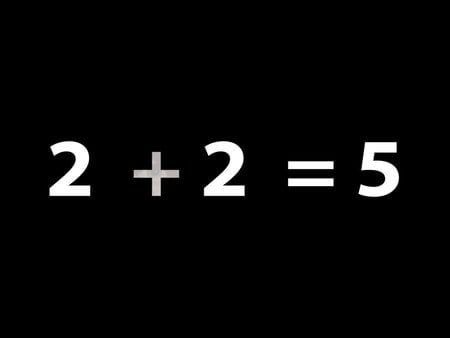

What is O'Rions Math?
O'Rions math is a type of math that can only be done by O'Rion herself.It is an
easier and simpler way to do math.O'Rions math may look simple but may be confusing to people
that have not studied it, that is why i said only O'Rion herslef can do the math.O'Rion has always been outstanding
in the mathematical and has enjoyed doing challenging problems.O'Rion realised that not many people enjoyed doing math because
of how confusing and long the process is.So O'Rion got to work and created and easier, fun, and less time consuming way to do Math
,O'Rions Math.The only problem that there is with O'Rions Math is that you need to have a highly complex mind to understand
it.
Legend says that if you say "Dear O'Rion bless me with your smarts" before you have a math test then O'Rions spirt
will look over you and guide you to the right answers.
Work

Regular Way

O'Rions way